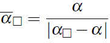

Monocular Outlier Detection for Visual Odometry
This page will summarize the ideas about how to detect outliers in a visual odometry pipeline that is purely based on the optical flow of one monocular camera without requiring information about depth.
And the paper "Monocular Outlier Detection for Visual Odometry" is the follow-up discussion of " How to Distinguish Inliers from Outliers in Visual Odometry for High-speed Automotive Applications, Martin Buczko and Volker Willert ". This new method has considered both the camera motion and pixel discretization error in outlier removal.
Main contribution:
analyze the dependency of the direction of the flow induced by the translational components of the camera motion assuming rotation-free (rotation is known)
solve for a normalized directional flow error that takes the influence of the discretization error induced by the pixel size into account (a circular and a squared error bound)
present a monocular outlier detection pipeline including the normalized directional flow error as a suitable constant threshold criterion almost invariant to the camera motion and the scene geometry
Outline:
Relations Between Camera Motion and Optical Flow
The figure below shows there is a generic vehicle motions that contain rotation and translation lead to optical flow vectors (green lines) that do not necessarily have a common intersection point. The different directions (yellow lines) of optical flow depend on the motion itself and the spatial coordinates of the observed features.
Here is the motion data:
rotation: pitch: 1°, yaw: 2°, roll: 0°,
translation: sideward and downward is 0.1m and forward is about 1m.
What's the relation between camera motion and optical flow
Actually, the optical flow hypothesis  can be seen as the projected static 3D points on the image plane of an arbitrarily moving camera with motion hypothesis
can be seen as the projected static 3D points on the image plane of an arbitrarily moving camera with motion hypothesis  . The estimated optical flow can be defined as
. The estimated optical flow can be defined as  .
.
What is focus of expansion (FoE)
The optical flow induced by projected static 3D points on the image plane of a moving camera can be decomposed into its rotational and translational components. The directions of the translational components define straight lines all intersecting at a common point, the focus of expansion (FoE) as figure below, an example is given for a rotation-free optical flow pattern including the FoE.
For purely translational motions (  , all optical flow vectors intersect in one point, which is referred to as focus of expansion FoE (
, all optical flow vectors intersect in one point, which is referred to as focus of expansion FoE ( ). The green lines show the simulated optical flow vectors for
). The green lines show the simulated optical flow vectors for  . Here
. Here  is about 1m, sideward and downward motion are 0.1 m.
is about 1m, sideward and downward motion are 0.1 m.
The yellow lines enlarge the optical flow vectors until reaching
.
How to compute the FoE
The FoE (
) is the projection of the translational camera motion component T onto the image plane written as follows,
The FoE is independent on the feature’s depth and only dependent on the ratios  between the translational components of the camera motion.
between the translational components of the camera motion.
Based on the FoE, we will have the directions of the translational flow components are given by,
Normalized Optical Flow Directional Error with Different Camera Pixel Discretization Error Pattern
The preciseness of the measurement of the image coordinates  is limited by the discretization of the image plane given by the pixel size. Since optical flow vectors
is limited by the discretization of the image plane given by the pixel size. Since optical flow vectors  are differences of image coordinates, the image discretization error also influences the flow direction error
are differences of image coordinates, the image discretization error also influences the flow direction error  . Here, we're going to talk about two kinds of discretization error pattern, circular discretization error bound and squared Discretization error bound.
. Here, we're going to talk about two kinds of discretization error pattern, circular discretization error bound and squared Discretization error bound.
How to compute the optical flow direction error
We assume the discretization error has to be considered for both optical flow coordinates  and
and  . The focus of expansion
is assumed to be much more accurate because it is calculated from all optical flow vectors including a robust least squares fitting technique (in next section).
. The focus of expansion
is assumed to be much more accurate because it is calculated from all optical flow vectors including a robust least squares fitting technique (in next section).
Given
optical flow
 ,
,hypothesis direction pointing to the FoE

The directional error
(w/o discretization error) is,

Tips:
For monocular visual odometry systems, depth cannot directly be measured and thus only the directional error can be exploited.
Circular Discretization Error Bound
The figure below shows the worst configuration with circular discretization error pattern.
-
is the directional error without considering the discretization error
 is the directional error including the discretization error assuming a circular error bound with radius
is the directional error including the discretization error assuming a circular error bound with radius 

The first erroneous coordinate  is given by the tangent to the circular error bound of coordinate
is given by the tangent to the circular error bound of coordinate  from the error-free coordinate
from the error-free coordinate  .
.
The second erroneous coordinate  is given by the tangent to the circular error bound of coordinate
from the error free coordinate
.
is given by the tangent to the circular error bound of coordinate
from the error free coordinate
.
Since there is a erroneous pixel coordinate, it leads to an erroneous optical flow vector  and also due to this discretization errors, it maximally changes the directional error from
to
.
and also due to this discretization errors, it maximally changes the directional error from
to
.
Based on basic geometry knowledge, we will have,  and
and  .
.
Applying the law of sines to two different triangles,

For moderately small angles α and quite small Δα such that,  ,
,  and
and  , then it's reduced to,
, then it's reduced to,

Based on above equation, we can treat the maximal difference  (under worst configuration, see figure above) as an normalization factor for the directional error
to eliminate the sensitivity changes of the directional error because of the discretization error.
(under worst configuration, see figure above) as an normalization factor for the directional error
to eliminate the sensitivity changes of the directional error because of the discretization error.
Finally, we have the normalized directional error for a circular error bound.
We'll use the  as the indictor to judge the quality of optical flow exclude the affect of pixel discretization error.
as the indictor to judge the quality of optical flow exclude the affect of pixel discretization error.
Tips:
optical flow vector (with discretization error)
is knownFoE is known (see next section for caculation)
-
comes from

 is constant threshold
is constant threshold
Squared Discretization Error Bound
Similar to the circular error bound model, the figure below shows the worst configuration with squared discretization error pattern.
-
is the directional error without considering the discretization error
 is the directional error including the discretization error assuming a squared error bound with size
is the directional error including the discretization error assuming a squared error bound with size 
For the squared error bound, the worst directional error
occurs, when the component normal to the optical flow vector is shifted opposed and the tangential components are shifted towards the center of the optical flow vector.
In addition, the directional error including a squared error bound
is also dependent on the absolute orientation of the flow vector configuration within the image. Due to this fact, we apply a simple sample-based approach to account for all different configurations. The basic idea is visualized in figure below. Here, the measured vector is plotted as a solid blue line for each 45° sector. The worst case (see dashed blue) is that the starting point and the endpoint are always shifted in opposite directions.
The sampling method can be formulated as below equation and each  can be constructed as shown in the first figure of this section.
can be constructed as shown in the first figure of this section.

The maximum directional error (worst case) for a squared error bound is given by,
Again, the maximal difference  can serve as a normalization factor for the directional error under squared error pattern.
can serve as a normalization factor for the directional error under squared error pattern.
Finally, the normalization of α for a squared error bound leads to below.
We'll use the  as the indictor to judge the quality of optical flow exclude the affect of pixel discretization error.
as the indictor to judge the quality of optical flow exclude the affect of pixel discretization error.

Tips:
assume FoE is known (calculation see next section)
-
is the directional error without considering the discretization error → known
-
can be calculated from above equation.
Outlier Removal Pipe Line
step one: Rotation-Estimation
Previously, there is rotation-free assumption so that the direction of all optical flow have one common cross point. In order to compensate the rotation, we prefer the use of a common monocular visual odometry technique and optimize for the motion, that minimizes the "epipolar constraint".
Subsequently, the correct rotation can be found by decomposing  .
.
step two: Rotation-Compensation
As long as  , the direction of the optical flow is not dependent on the feature’s depth. Since the absence of rotation cannot be assumed in automotive context, existing rotation must be eliminated from the measurement data.
, the direction of the optical flow is not dependent on the feature’s depth. Since the absence of rotation cannot be assumed in automotive context, existing rotation must be eliminated from the measurement data.
This can be achieved by transforming  . The rotation free motion is equal to an ideal rotation compensation. The transformed camera coordinate can be written as
. The rotation free motion is equal to an ideal rotation compensation. The transformed camera coordinate can be written as  .
.
step three: Outlier-Definition
We consider a feature as a member of the current set of inlier features by evaluating the following criterion,
For a faster but less precise scheme, the criterion  can be used.
can be used.
step four: Robust Joint Determination of the Focus of Expansion and Outliers
The focus of expansion can be computed from the cross point of two straight optical flow line in the Hough form.
Here, ϕ is the angle between the line and the x-axis and d is the distance between origin and the line.
From this, we formulate the minimum sample problem to identify the focus of expansion  from two optical flow vectors
from two optical flow vectors  and
and  .
.
Tips: the FoE point is the intersection of two Hough line.
To achieve robustness, we integrate all methods into the generic RANSAC scheme,

Performance Evaluation
Simulation Case
Problem: No constant threshold can separate the green true inliers from the red true outliers.
The green lines are error-free. (no pixel error is injected.)
The red lines are man-made error. (every 10th optical flow has an additive error of 1 px normal to the ideal direction to simulate small errors with non-Gaussian distribution. Furthermore, 5 coarse outliers are added to simulate mismatches)
Reminder: direction error
is the angle between optical flow vector and FoE flow vector.
The visualization within the simulated scene above. Based on threshold=1.0, Green lines stand for correctly identified inliers and red lines for correctly identified outliers. Blue lines symbolize false positive inliers, whereas yellow lines mean false negative inliers.
Solution: with RANSAC scheme above, the result shows in the figure below,
With the proposed method, green true inliers and red true outliers can easily be separated by constant values.
We choose the threshold as 1, meaning that features with errors beyond discretization effects are considered as outliers.
All inliers and outliers are correctly identified. All data including distant features with very small optical flow vectors are classified correctly.
Kitti benchmark
This version is published as MonoROCC in Kitti benchmark and currently reaches the tenth place of all camera-based methods with 1.11% error.
By the day of 2022.6.29, the "MonoRocc" ranks 64 in visual odometry benchmark.